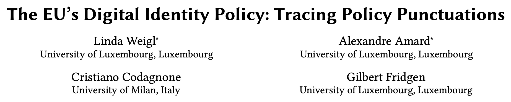
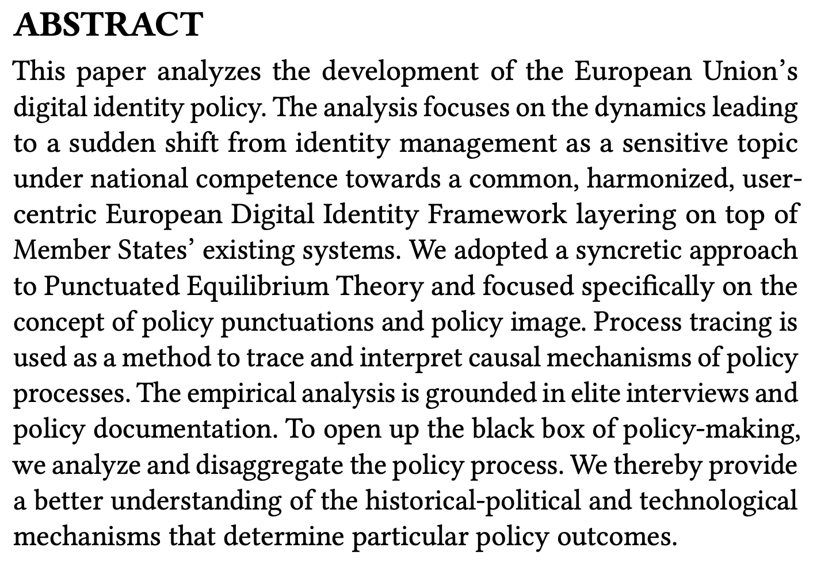
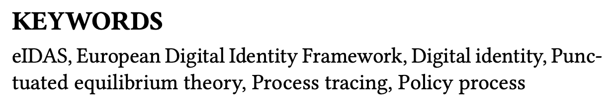
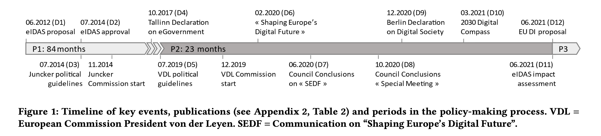

Research Methodology · November 5, 2026
Research Paper Presentation: The EU’s Digital Identity Policy (Weigl et al., 2022)

15th International Conference on Theory and Practice of Electronic Governance (ICEGOV 2022), Guimarães, Portugal · *Equal contribution
1 · Introduction
1 / 8
About 1 minute. Open by naming the presentation: a research paper presentation for the Research Methodology course, on 5 November 2026. The image is the first-page header of the paper: the title and the four authors from the University of Luxembourg and the University of Milan; the first two, marked with an asterisk, contributed equally. It was presented at the 15th International Conference on Theory and Practice of Electronic Governance (ICEGOV 2022) in Guimarães, Portugal. The field is public policy applied to digital government.
1 · Introduction · Abstract and keywords


Reading the abstract
The shift — from national identity management to a common, harmonised EU framework
The lens — Punctuated Equilibrium Theory: policy punctuations and policy image
The method — process tracing, with elite interviews and policy documents
Weigl, Amard, Codagnone & Fridgen (2022), ICEGOV 2022
2 / 8
About 2 minutes. The images are the abstract and the keywords from the first page of the paper. The abstract says the paper analyses the development of the EU’s digital identity policy, and in particular the sudden shift from identity management as a sensitive national matter to a common, harmonised, user-centric European Digital Identity Framework layered on top of national systems. The authors use Punctuated Equilibrium Theory, focusing on policy punctuations and policy image, and process tracing to trace causal mechanisms, based on elite interviews and policy documents. The keywords show the two ingredients: eIDAS and digital identity on one side, punctuated equilibrium theory and process tracing on the other.
1 · Introduction · The problem
The problem the paper addresses
The problem
Identity is a national competence. eIDAS (2014) stayed cautious for years: voluntary schemes, public services only. In June 2021 the Commission proposed a binding EU-wide digital identity framework.
Why did a stable policy change so suddenly?
Voluntary national schemes, public services only
Binding rules: Member States must notify an eID scheme, and private actors must accept the EU wallet
80% of citizens using eID systems
Weigl, Amard, Codagnone & Fridgen (2022), ICEGOV 2022
3 / 8
About 2 minutes. The problem in one breath: identity is mainly a national competence, and the EU treaty gives no explicit power to regulate it. The 2014 eIDAS Regulation was cautious. Member States joined through voluntary, notified schemes, and it covered public-sector services only. Yet in June 2021 the Commission proposed a binding framework with digital identity wallets for the whole EU. Under it, Member States must notify at least one eID scheme, and specific private actors, including very large platforms, must accept the wallet. The Commission’s Digital Compass sets a target of 80% of citizens using eID systems by 2030.
The authors ask why such a sudden change happened.
2 · Structure of the paper
How the paper is built
1 Introduction
Slides 1–3
The eIDAS revision, the research question and the approach
2.1 EU digital identity policy; 2.2 agenda-setting and PET, with the two hypotheses
3.1 Process tracing; 3.2 data collection and analysis
4.1 Policy punctuation; 4.2 policy image; 4.3 other agenda-setting factors
Answer to the research question and three further observations
Two limitations and ideas for future research
Plus appendices (interview partners and 12 policy documents) and 37 references: eight pages in total.
Weigl, Amard, Codagnone & Fridgen (2022), ICEGOV 2022
4 / 8
About 2 minutes. A classic empirical paper in six sections. The introduction poses the question. The background has two parts: the EU digital identity policy itself, and agenda-setting theory (Punctuated Equilibrium Theory), where the two hypotheses are introduced. The methodology covers process tracing and the data. The findings are organised around the two hypotheses plus a third part on other agenda-setting factors. The discussion answers the research question and adds three observations. The conclusions state two limitations and ideas for future research. The paper ends with appendices (interview partners, policy documents) and 37 references. The grey tags show where each part appears in this presentation.
3 · Research questions
From the problématique to the research questions
La problématique — The central research problem
Identity is mainly a national competence and eIDAS stayed cautious, yet in 2021 the EU proposed a binding, harmonised framework. Why did a stable policy change so suddenly?
Les questions de recherche — Research questions
stated
Q1 · Hpp, policy punctuation hypothesis
Was the 2021 EDIF proposal a genuine break in a stable policy?
Hypothesis: the speedy, ambitious proposal is a clear step change from the earlier, stable digital identity policy.
stated
Q2 · Hpi, policy image hypothesis
Did linking eIDAS to the Commission’s digital priorities cause it?
Hypothesis: tying eIDAS to those priorities is what broke the stable policy equilibrium.
Weigl, Amard, Codagnone & Fridgen (2022), ICEGOV 2022
5 / 8
About 4 minutes. Start with the problématique, which is not the topic but the tension behind it: a policy area where the EU’s legal competence is contested and the old regime was stable, yet the Commission suddenly moved to a binding framework. The authors state the big question themselves: why did a sudden step change happen in the form of a substantial eIDAS revision?
Then the two directing questions, both stated by the authors as hypotheses. Q1 is Hpp, the policy punctuation hypothesis: the 2021 proposal is a clear step change in a previously stable policy. Q2 is Hpi, the policy image hypothesis: linking eIDAS to the Commission’s digital priorities punctuated the equilibrium.
If asked about problems: Hpp is partly circular, because the proposal itself is what defines the step change. And other factors (COVID-19, technology, leadership, venue-shopping) only show up in the results; they are never posed as questions at the start.
4 · Applied research method
Single-case process tracing: P1 stability, P2 causal processes, P3 outcome

Data
10 semi-structured elite interviews, Mar–Apr 2022 (about 40 minutes each)
12 policy documents to cross-check them
Analysis
Process tracing: causes linked to the outcome through mechanisms
Closed coding in MAXQDA, PET-based scheme
Operationalisation
Status quo: cross-border, interoperability
Punctuation: harmonisation
Policy image: 4 Commission priorities
Figure 1 · Weigl, Amard, Codagnone & Fridgen (2022), ICEGOV 2022
6 / 8
About 3 minutes. The design is a single-case study using theory-centric process tracing. Process tracing moves beyond narrative description to identify the causal mechanisms linking causes to an outcome, and the authors translate Punctuated Equilibrium Theory (Baumgartner and Jones, refined for the EU by Princen) into that mechanism.
Walk along the timeline, which is Figure 1 from the paper (page header cropped off); it is not to scale. P1 runs from the 2012 eIDAS proposal to the end of the Juncker Commission in 2019, 84 months, and is the initial situation. P2 runs from July 2019 to June 2021, 23 months, and is where the causal processes took place: the von der Leyen guidelines and Commission start, then the Shaping Europe’s Digital Future communication, the Council and European Council conclusions, the Berlin Declaration and the 2030 Digital Compass. P3 starts on 3 June 2021 with the publication of the EDIF proposal, the outcome. The D-numbers refer to the 12 policy documents listed in the paper’s appendix (Table 2).
Data: 10 semi-structured elite interviews held in March and April 2022, about 40 minutes each, with people involved in decision- and policy-making, whose average professional experience is 25 years and 6 months. Twelve public policy documents were used to cross-check the interviews. Two authors coded transcripts and documents in MAXQDA with a closed, deductive coding scheme based on PET.
Operationalisation: the status quo is measured by the concepts cross-border and interoperability, the punctuation by harmonisation, and the policy image by four Commission priorities: digital sovereignty, data control, the Digital Single Market and competitiveness.
5 · Findings
Both hypotheses are confirmed
Punctuation (Hpp)
Confirmed
Focus shifted from cross-border interoperability to a harmonised EU framework.
Interviewees describe a “quantum leap” beyond eIDAS 1.0.
The proposal went beyond the review duty in eIDAS Article 49.
Policy image (Hpi)
Confirmed
eIDAS was reframed around four Commission priorities:
Digital sovereignty — strong evidence
Data control — strong evidence
Digital Single Market — present
Competitiveness — weaker evidence
Other factors
Beyond the hypotheses
COVID-19 accelerated the case for digital identity.
Self-sovereign identity technology inspired the design.
Commission leadership with a “green and digital” mandate.
Answer
Weigl, Amard, Codagnone & Fridgen (2022), ICEGOV 2022
7 / 8
About 4 minutes. Hpp, the punctuation, is confirmed. Under eIDAS 2014 the goal was cross-border authentication and interoperability. By 2021 the objective was a harmonised EU digital identity ecosystem. Interviewees speak of a “quantum leap”, and the proposal went beyond the simple review obligation in Article 49. The issue only entered the agenda in P2, after the von der Leyen Commission took office.
Hpi, the policy image, is also confirmed. The authors test four Commission priorities. Digital sovereignty and data control show the strongest evidence, and both were marginal or absent in the Juncker guidelines. The Digital Single Market link is present. Competitiveness has weaker evidence in their data.
Other factors emerged that the hypotheses did not capture: the acceleration by COVID-19, the self-sovereign identity technology concept and verifiable credentials, and leadership dynamics, including an innovation-minded Internal Market Commissioner.
Answer to the research question: the reframing of eIDAS with the incumbent Commission’s priorities was largely responsible. The authors found no classic venue-shopping, but the venue effectively changed when the Commission leadership changed.
6 · Your opinion
Assessment of the paper
Good
Theory fits method: PET tested with process tracing
Interviews cross-checked against 12 policy documents
Honest about limits and rival explanations
Not so good
Closed coding on a PET scheme risks confirmation bias
Small elite sample: only 10 interviews
Interviews held in 2022, after the events: hindsight risk
Theory and question
Linked to theory: PET, policy image, venue-shopping
Answers the question: reframing explains the punctuation
But causal inference is weak, and PET is silent on technology
Suggestions
Add a comparative case to strengthen the causal inference
Test COVID-19, technology and leadership as formal rival hypotheses
Report coding agreement and widen the interviews to more EU-level voices
Score
7 / 10
Sound design, modest proof
Weigl, Amard, Codagnone & Fridgen (2022), ICEGOV 2022
8 / 8
About 4 minutes. Good: the theory and the method fit together well. Punctuated Equilibrium Theory is a theory of policy dynamics, and process tracing is built to uncover causal mechanisms, which Jones and Baumgartner themselves recommended. Triangulating interviews with 12 policy documents strengthens the evidence. The authors are also open about their limits.
Not so good: coding was closed and deductive, built from PET, so the data may simply have been read through the theory. Ten elite interviews is a small sample. Interviews were held in 2022, after the events, so hindsight is possible. I raised the circularity of Hpp on slide 5.
Theory and question: the paper is firmly linked to PET (Baumgartner and Jones, Princen) and answers its question, since reframing explains the punctuation. But the authors admit the causal inference is weak and rival factors cannot be fully eliminated, and PET says little about technology.
Suggestions: a comparative follow-up, formal testing of the rival factors, reporting coding agreement, and interviews with more EU-level actors.
Score: 7 out of 10 is my draft judgment. Change it to your own before presenting.